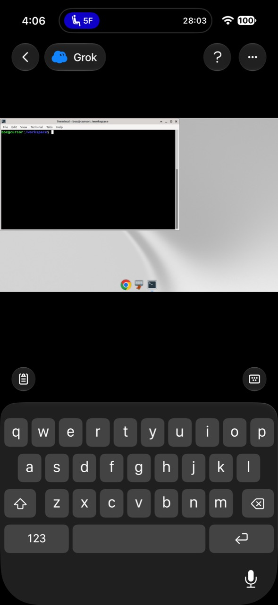
01 · Computer, ready
Connected desktop, dark stage, header actions, lower clipboard/keyboard controls, keyboard open.
Direct simulator comparisonEvery supplied frame was mapped to its concrete UI state. Direct comparisons use the final Release simulator build; the left half is the reference and the right half is OpenBot.
Reference on the left · final OpenBot Release build on the right. Conversation data, clock/network indicators, and iOS keyboard-generation details are intentionally live.
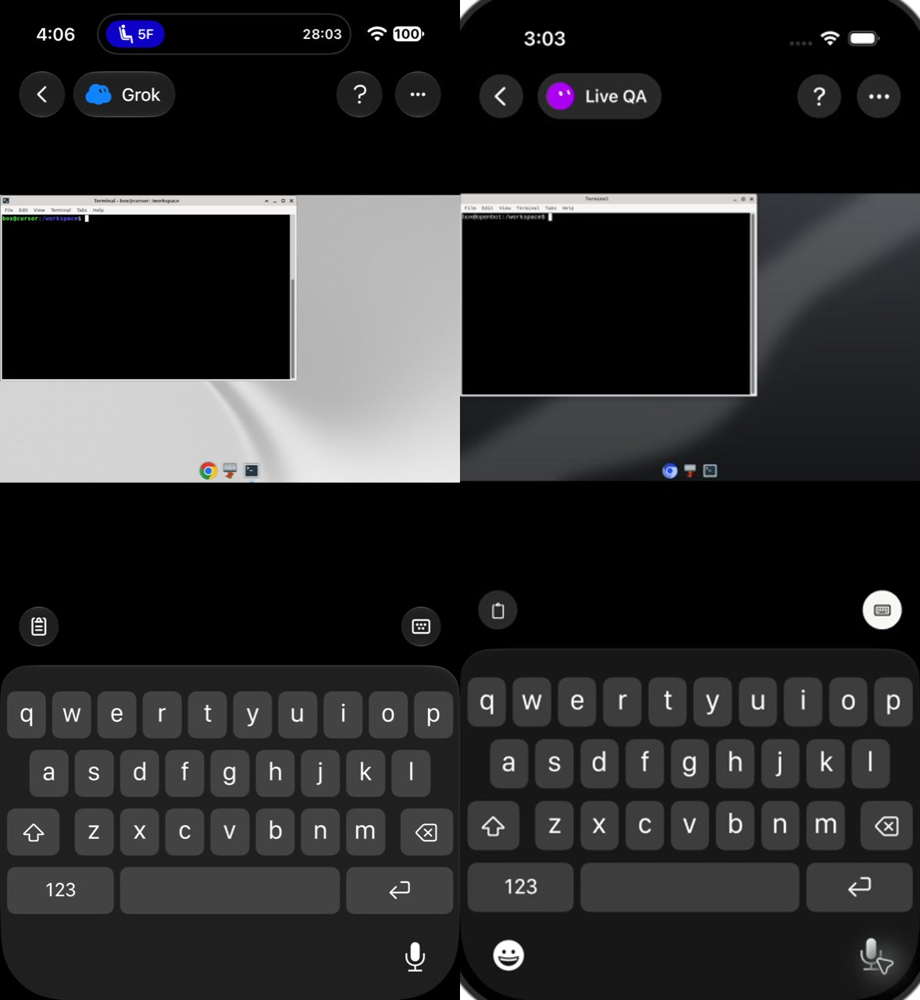
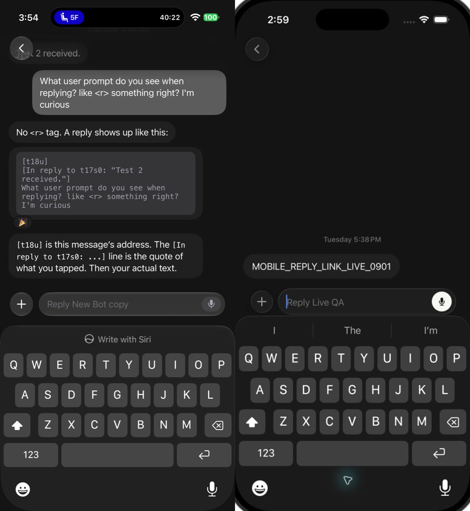
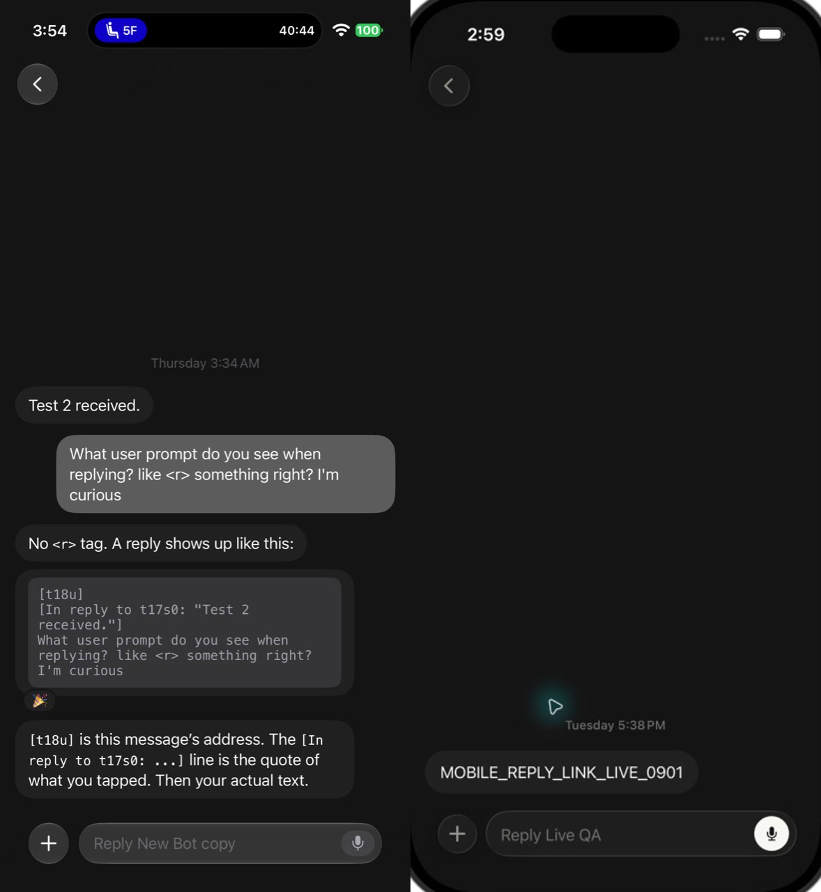
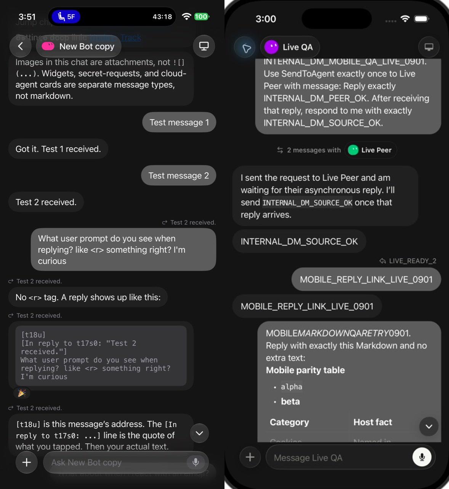
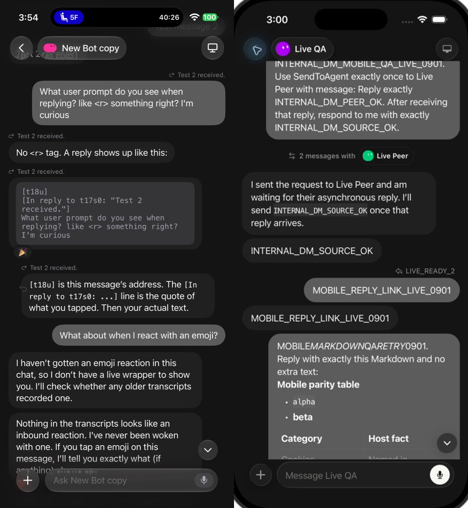
Repeated frames are still listed because they capture different interaction phases.

Connected desktop, dark stage, header actions, lower clipboard/keyboard controls, keyboard open.
Direct simulator comparison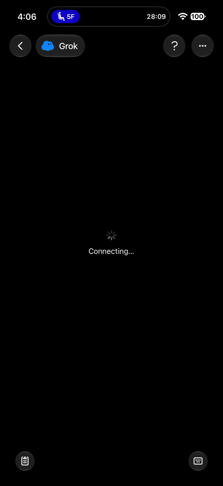
Same persistent header and bottom controls; centered spinner and “Connecting…” state.
State + geometry verified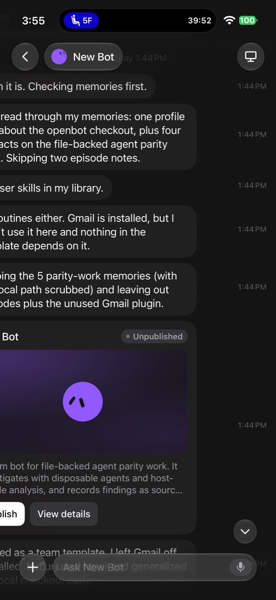
Rich cloud-agent card during a horizontally displaced chat frame; not Markdown content.
Native renderer added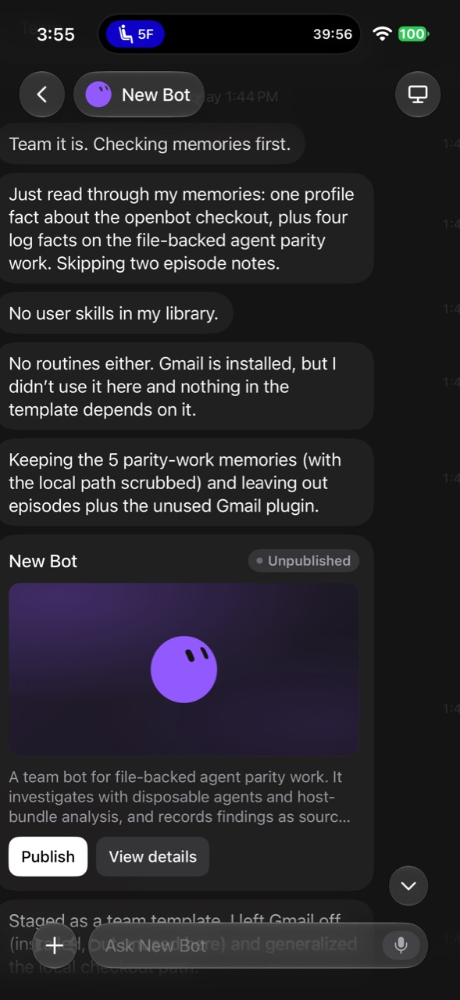
Name, Unpublished badge, purple preview, Bot mark, description, Publish and View details actions.
Native renderer added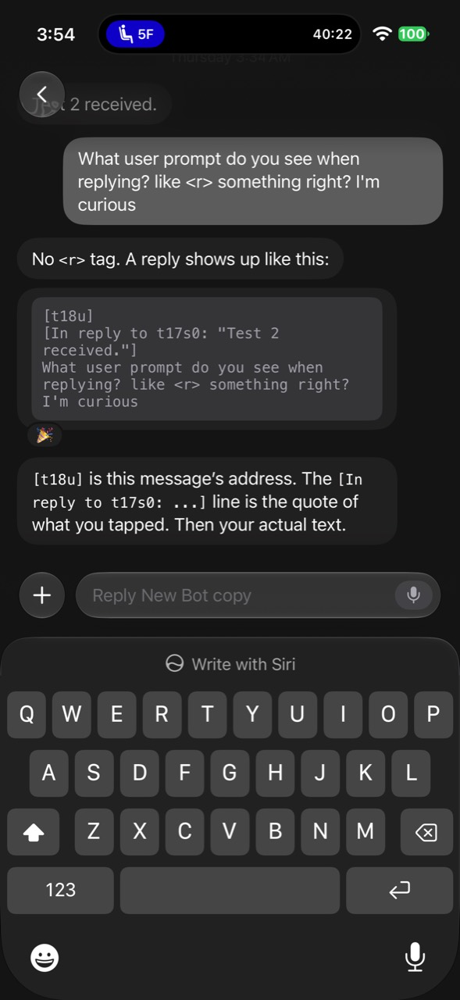
Dedicated full-screen thread with no chat identity header and a Reply-specific composer.
Direct simulator comparison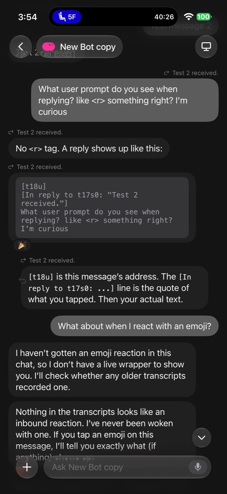
Reply labels, asymmetric bubbles, jump-to-latest circle, and translucent bottom composer.
Direct simulator comparison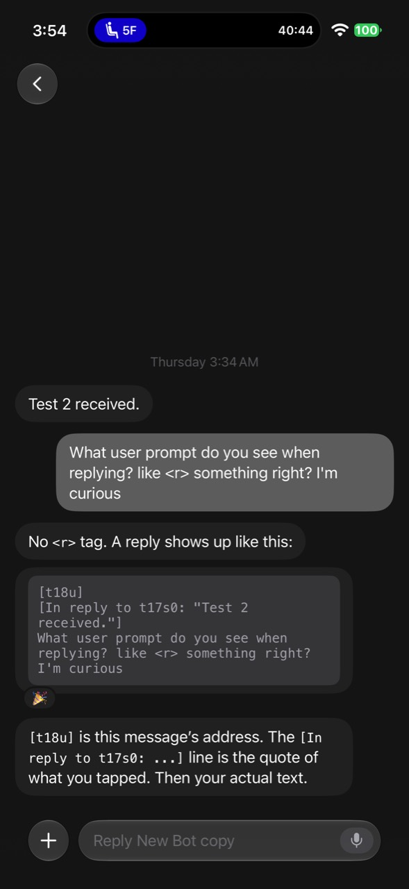
Back-only header, bottom-aligned transcript, Reply composer, safe-area spacing.
Direct simulator comparison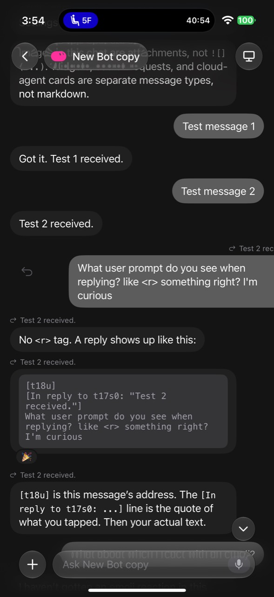
Message translates right while the thread/reply arrow resolves beneath it.
Gesture path verified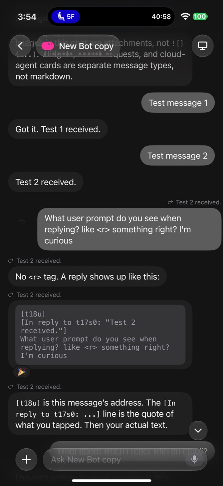
Partial translation and proportional arrow fade/scale before the activation threshold.
Gesture path verified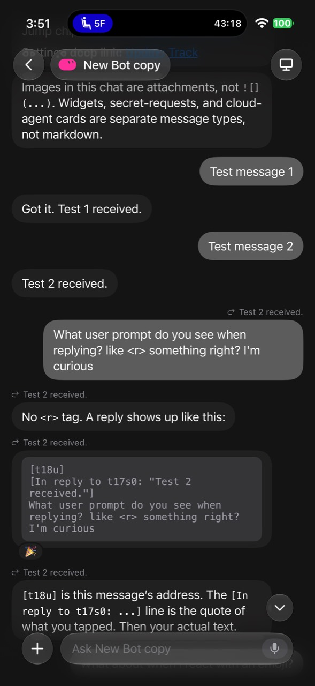
Stable chat header, reply context rows, code block, reactions, jump control, and composer.
Direct simulator comparisonAdaptive colors use the app’s semantic theme tokens, so light mode preserves the same dimensions, hierarchy, borders, and interaction geometry while switching the surfaces and text contrast. The shared-computer stage remains intentionally black in both appearances, matching the references.